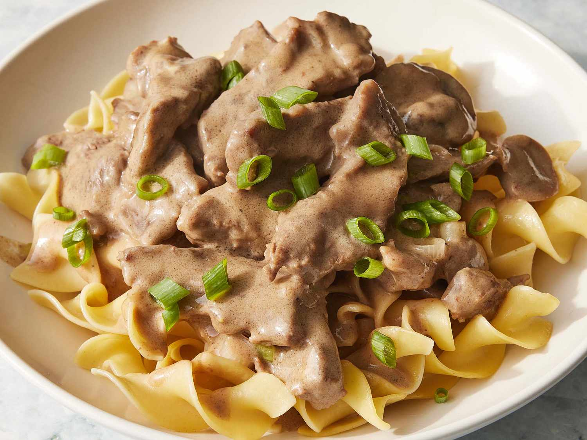

Beef Stroganoff

Creamy beef stroganoff serbved on pasta, jackdet potato or vol-au-vent.
Braised shortribs
Ingredients
4 4 oz beef short ribs (dry brined for a day if you can)
1 cup of wine (I used Pinot Gregio because I like it, and someone had to drink the rest of the bottle. I would suggest a similar selection method because any wine should work here)
2 cups stock (I used store bought and cheated by adding about a couple teaspoons of plain gelatin, but your own veal stock would be ideal)
Small onion, rough chopped
4 cloves of garlic, peeled and smashed with the flat of your knife
Steps
In a hot dutch oven, sear off your ribs and set aside.
Turn heat to medium low and sweat the onions with some salt and pepper until soft and translucent.
Add tomato paste and garlic, cook for another couple min.
Deglaze pot with the wine, add your stock, meat, more salt (careful; here too much salt will cause issues down the line as you're going to reduce the braising liquid by 3/4 or more later), and everything else, then bring to a simmer and transfer to an oven that's preheated to around 250 for 2-2.5 hours, until meat is tender.
Check after a few min to make sure its at a simmer and adjust the oven temp if you need to, then prep your other ingredients and go do some other shit.
Remove the meat from the liquid and set aside in some foil to stay warm.
Strain the liquid through a sieve, and set aside.
Sauce
Ingredients
1lb Crimini Mushrooms, cleaned and sliced medium thick
1 Medium onion (cut in half root to stem and sliced 1/2" thick the same direction.)
3tbsp butter (...ish? Just have a stick of butter handy)
1/2 a bunch of flat leaf parsley
Steps
In a large skillet, brown your mushrooms with butter salt and pepper, 2 batches seems to go faster for me, and set aside.
Add the onions to the pan and brown them with butter, salt and pepper.
Add the garlic and thyme, and cook for another minute or two.
Deglaze with the wine, then add the braising liquid and reduce until it starts getting "saucy" in texture.
Add the mushrooms back to the pan along with the cream and reduce by about half, until saucy as well (This will thicken as it cools so allow for this).
Add salt, pepper, the dijon, and worchestershire to taste.
You can now add the meat that you've removed from the bone and sliced to be bite sized, to the mixture and stir everything together.
Remove freom heat, add a tbsp of cold butter, the parsley, and a small dollop of sour cream before spooning over rice, mashed potatoes, or (as pictured) buttered egg noodles.